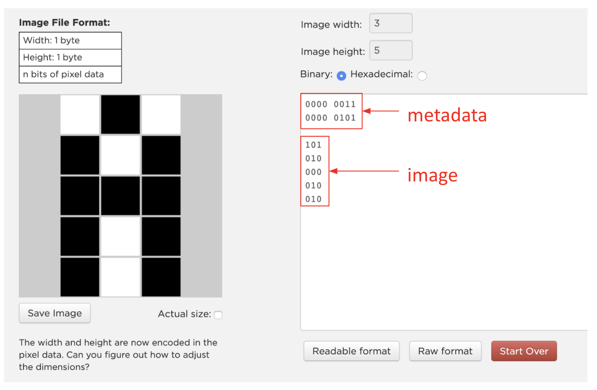
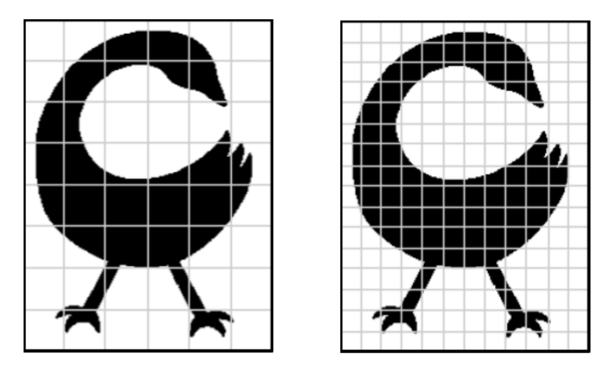

At the end of this lesson, you will be able to:
Open up the Pixelation Widget. Watch the instruction video and start by building the letter 'A' using a 3x5 grid as shown below. Remember, you will need to add the 16 bits of 'metadata' to define the width and height of the image.

So why are we back to bits again? Because a black-and-white image is binary all the way down. Each pixel is exactly one bit - a 0 for white, a 1 for black - and the whole image is just a long binary number that we've agreed to lay out in a grid instead of a single line. The letter 'A' you built isn't really a "picture" as far as the computer is concerned; it's a string of 1s and 0s, plus a little metadata telling us where each row ends and the next begins.
You may already read a binary image every day. Braille is this exact idea made tactile. Each Braille character is a small grid of six dot positions, and every position is one bit - a raised dot (1) or a flat space (0). Six on/off dots give 26 = 64 possible patterns, more than enough for every letter, number, and punctuation mark. Running a finger across a line of Braille is reading the very same kind of one-bit-per-cell grid the pixelation widget builds - bumps instead of shaded squares, fingertips instead of eyes, but the same binary picture underneath. (And that 26 = 64 is the counting rule from Lesson 3 turning up yet again.)
How many pixels you use is called the image's resolution, and it's a trade-off you can't wriggle out of. More pixels means more detail - smoother curves, cleaner edges - but every extra pixel is another bit you have to store. That tiny 8x8 icon is 64 pixels, so 64 bits, which is just 8 bytes - basically nothing. But a photo from your phone might be a few thousand pixels along each side, which lands you in the millions of pixels, and (once we add color, where a single pixel needs far more than one bit) that's exactly why image files balloon into megabytes. Hold onto that tension between detail and size - it's the whole point of sampling, which is coming up next.
Now that you’ve seen how to flip each pixel black or white, we're going to use the widget for something trickier: representing an analog image, using a process called 'sampling'.
First, what does "analog" even mean? It's the word for anything continuous - like a picture you draw on a piece of paper. Each pencil line flows smoothly into the next, no matter how far you zoom in with a magnifying glass. There are no separate pieces to point at.
To represent an analog image digitally, we have to make some choices about how to sample it. We want the smoothest representation we can get - but every extra pixel costs bits, and that trade-off is the whole game.
And what does it mean to sample? We're choosing how small a section of the picture to look at when deciding whether to make it black or white. Smaller samples mean more pixels to store; larger samples mean fewer pixels, but the image starts getting blurry.
Sampling isn't only about pictures - and here's a version you can hear. Sound is analog too: a smooth, continuously wiggling wave in the air. To store it digitally, the computer measures that wave thousands of times per second and writes down each measurement as a number - that's sampling in time instead of in space. How many measurements it takes per second is the sample rate, and it plays exactly the role that resolution plays for an image. Sample often and the recording sounds crisp and faithful, but the file is big; sample rarely and you save space, but the sound turns muddy and rough - the audio twin of a blocky, low-resolution picture. CD-quality audio takes 44,100 samples every second; an old telephone line takes only about 8,000, which is exactly why a voice on a bad phone connection sounds thin and grainy. You can hear the detail-versus-size trade-off, the same one you're about to see in the widget below.
Try it out yourself! Use the Pixelation Widget to create the images below.

How many bits did it take to build each image? How long did it take? Which sampling better represents the original image? Why?